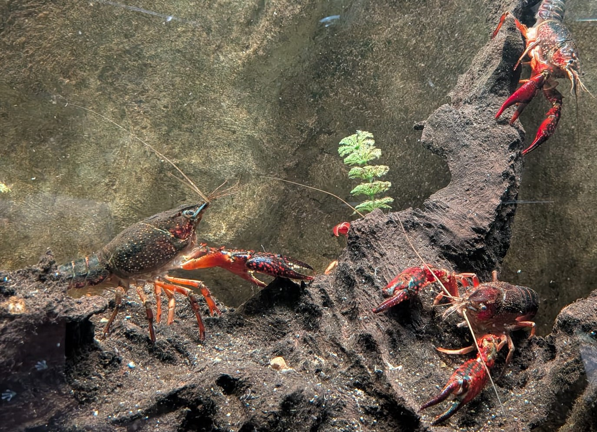

Écrevisse de Louisiane
Procambarus clarkii
Originaire du sud des États-Unis et du nord du Mexique, l'écrevisse de Louisiane est aujourd'hui présente dans une grande partie de l'Europe. Très résistante et extrêmement prolifique, elle est considérée comme l'une des principales espèces invasives des milieux aquatiques.
Informations scientifiques
| Nom scientifique | Procambarus clarkii |
|---|---|
| Nom commun | Écrevisse de Louisiane |
| Famille | Cambaridae |
| Ordre | Decapoda |
| Classe | Malacostraca |
| Origine | Sud des États-Unis et nord du Mexique. |
| Répartition actuelle | Europe, Asie, Afrique et de nombreuses autres régions. |
| Habitat | Étangs, rivières, marais, fossés et plans d'eau. |
| Longueur | 10 à 12 cm. |
| Espérance de vie | jusqu'à 6 ans. |
| Statut | Espèce exotique envahissante. |
Description
L'écrevisse de Louisiane possède une coloration rouge
foncé caractéristique, souvent parsemée de petits points
clairs sur les pinces.
Très opportuniste, elle se nourrit de végétaux, de
mollusques, d'insectes, d'amphibiens, de poissons et
de matières organiques.
Grâce à sa grande capacité d'adaptation, sa reproduction
rapide et sa résistance aux conditions difficiles,
elle colonise facilement de nouveaux milieux.
Elle provoque d'importants déséquilibres écologiques en
entrant en compétition avec les écrevisses indigènes,
en détruisant la végétation aquatique et en creusant
des galeries qui fragilisent les berges.